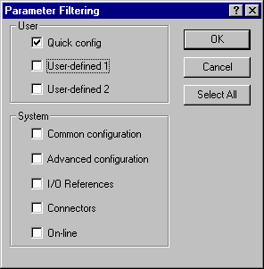
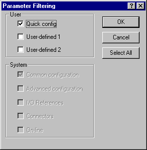
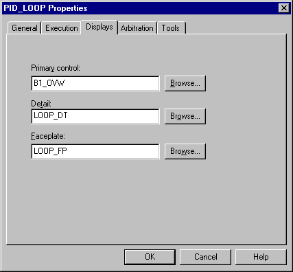

Editing the module in Control Studio
To launch Control Studio from DeltaV Explorer, select and right-click the copied module, and then select Edit from the context menu. The module appears to be nearly identical to the template from which it was created. Only the name in the title bar is different. Give the module unique parameter values, I/O references, and so on, to differentiate it from other modules.
In Control Studio, a module initially looks like the module template from which it was created. When you are customizing a module, be sure that you are editing the module and not the module template.
Follow the procedure in the configuration tips. A common step to all module templates is filtering the parameter list to display the Quick Config parameters. These are the parameters that you edit to make the module unique. However, it is not necessary to change every Quick Config parameter, and you might want to change other parameters that are not in the Quick Confg view. The Quick Config parameters are those that are commonly configured when a module is created from a module template. You can add or remove parameters from the Quick Confg view for a given module or module template.
Click the Filter button in the parameter list window to set the view in the list. The default view is for Common configuration. Clear the Common configuration check box and select the Quick config check box, as shown in the following figure.

The scope for the parameter list can be either Track Selection or All Levels. Use the combo box to set the scope in the parameter list window. Consider the scope suggested in the configuration tips. When Track Selection is needed, select the function block named in the configuration tips to view the appropriate list of parameters.
To add or remove a parameter in the Quick Confg view, use the parameter's Edit dialog. Click the Filter button on the parameter's Edit dialog to open the dialog shown below. Note that the System options are not active. Select the Quick config option to add the parameter to the module's Quick Confg viewor clear it to remove the parameter from the Quick Confg view.

All of the module templates include one or more module alarm parameters. In some cases, the alarms are not enabled by default. These alarms can be enabled, and other alarms can be disabled. The priority of each alarm has a default value that can be changed as necessary.
Another step common to all modules is editing the module properties. The Module Properties dialog, shown below, can be accessed by clicking its toolbar icon or by selecting Properties from the File menu. If the module was created from a DeltaV module template, the text you enter in the Description box appears on the faceplate display and the detail display. Note that the description can be as long as 48 characters, but it is truncated to 24 on the pop-up displays.
The execution rate for the module can be changed using the combo box.
Enter the name of the primary control display without the file extension. Data links for this module can appear on more than one display. With this primary display name, you can access the module from the alarm banner.
If the module was not created from a DeltaV module template or if you want to change the name of a faceplate or detail display, enter the display names without their extensions.
If you change the name of the faceplate display for the module, you must create a chart for Process History View to use when launched from this faceplate. The standard faceplate displays already have charts with the same name for Process History View to use. You can copy the existing chart and rename it or create a completely new chart. Refer to the Process History View help for information on creating and editing charts.

When customizing a module created from a DeltaV module template, do not change any function block usage name. Doing so changes the path to the block's parameters and results in a loss of communication in DeltaV Operate for parameters with data links on the dynamos, faceplates, and detail displays.